Navigateur Ceno
Partagez le Web ! Ceno est le premier navigateur web au monde qui s'améliore avec chaque installation. Offrant une expérience commune de navigation sur Internet, il s'appuie sur une technologie de pair à pair pour délivrer et partager des sites Web parmi tous les participants. Ceno peut également être utilisé pour contourner les restrictions réseau et parcourir le contenu lors d'un arrêt.
🔓 👀 Accédez à des médias bloqués et d'autres sites. Gratuit et anonyme en mode personnel.
🚫🌴 En cas de coupure d'Internet dans votre région, vous serez toujours en mesure de lire les actualités et de rester connecté.
📱🤝📱Vous vivez dans un pays avec un accès à internet libre et non censuré ? Aidez les gens dans d'autres pays à contourner la censure et accéder à des informations indépendantes avec une seule action. En savoir plus sur notre site .
📖👐 Ceno Browser est bâti sur Ouinet, une bibliothèque open-source. Vous pouvez vérifier le code sur GitLab.
🛠🦹 Notre produit peut présenter des instabilités en raison de l'évolution constante des technologies de censure. Nous l'améliorons continuellement pour vous assurer de maintenir l'accès. Si les sites Web se chargent lentement ou ne s’ouvrent pas, s’il vous plaît ne supprimez pas l’application — essayez de l’utiliser de nouveau dans quelques jours ou contactez notre équipe de support : support [at] ceno [dot] app
Ceno est développé par eQualitie. Il s'agit d'un navigateur entièrement libre et open source qui ne nécessite pas d'enregistrement et est complètement sans pub.
Nous collectons des statistiques réseau et applications anonymes . Aucune information personnelle n'est recueillie et les données ne sont jamais partagées avec des tiers. La collection des statistiques est activée par défaut, les utilisateurs peuvent la désactiver à tout moment via le réglage [Paramètres> Statistiques en arrière plan > Statistiques Ceno ] (./settings.html#background-metrics). Veuillez consulter notre Politique de confidentialité pour plus d'informations sur ce que nous recueillons.
Introduction
Ceno est un navigateur web basé sur les composants Android Mozilla. Il est conçu pour accéder et distribuer du contenu web (sites web) utilisant une approche nouvelle qui utilise BitTorrent - un réseau de partage de fichier décentralisé. L'avantage de Ceno permet de contourner les méthodes actuelles de censure d'internet, et permet aux utilisateur d’accéder et de partager des informations web dans et au delà des régions au sein desquels la connexion a été interrompue ou compromise.
Le navigateur Ceno vous permet d'accéder à n'importe quel site web sur Internet, même s'il n'est pas normalement accessible dans votre pays ou région.
Si un site Web que vous souhaitez visiter est accessible, Ceno y accédera directement et se comportera comme tout autre navigateur. Mais si vous n'êtes pas en mesure d'accéder directement au site Web souhaité, Ceno tentera d'y accéder à travers son propre réseau de pairs à pairs. Ceno mettra en cache le contenu du site Web accessible et le mettra à la disposition d'autres utilisateurs de Ceno utilisant la technologie pairs à pairs.
Lorsque d'autres membres du réseau Ceno demandent le même contenu et ne sont pas en mesure d'y accéder directement, Ceno identifiera que le contenu du site Web demandé est stocké dans le cache de votre application Ceno. De là, il sera téléchargé de votre appareil sur Internet et redirigé vers la personne qui l'a demandé. Dans les [Paramètres] (./settings.html) de votre application Ceno, vous pourrez voir combien de données ont été stockées sur votre appareil et tous les sites Web que vous avez partagés.
Bien sûr, cela ne s'applique qu'aux sites que vous visitez dans le [** Mode public**] (./public-or-personal.html#public-browsing---when-to-use-it).
Pour tous vos besoins personnels, comme les courriels, les messages, les abonnements ou les achats, nous fournissons un ** Mode personnel**. Lorsque vous accédez à l’Internet dans ce mode, l’application Ceno ne stocke pas les pages auxquelles vous accédez et ne les partage donc avec personne d’autre.
Ce guide contient des informations détaillées sur les caractéristiques de Ceno et leur but.
Nous espérons que vous apprécierez l'utilisation de notre application.
Installation
Ceno pour Android peut être téléchargé pour les plateformes suivantes : Google Play, Gitlab, Paskoocheh ou dComms.
Please download the app and install it. Once installed, tap on Open and the app will welcome you to its Onboarding screens.
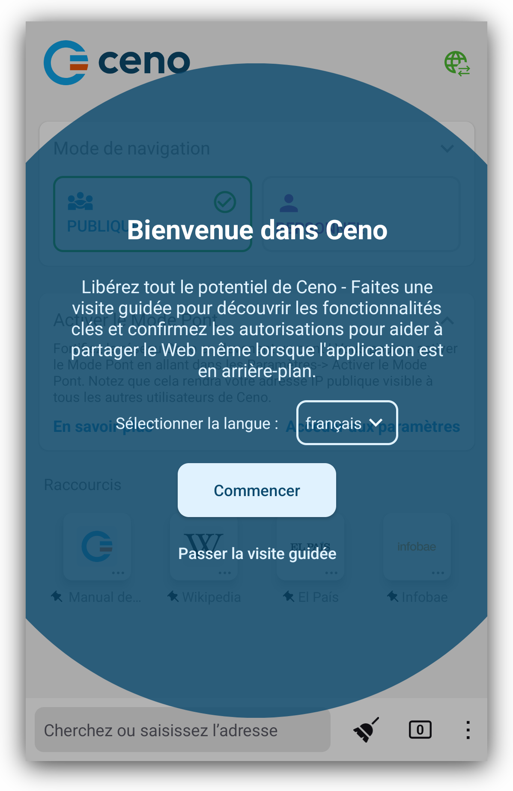
Premier lancement
Visite guidée
Lorsque vous exécutez pour la première fois votre application Ceno, vous serez invité à une petite visite guidée autour des principales caractéristiques de Ceno, que vous pouvez accepter (en tapant sur le bouton 'allons-y’) ou sauter (en tapant ‘sauter la visite’)
La visite vous fera découvrir les caractéristiques les plus importantes, comme le montrent les écrans suivants.
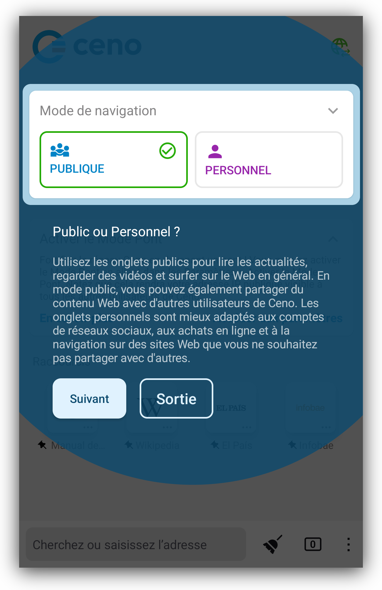
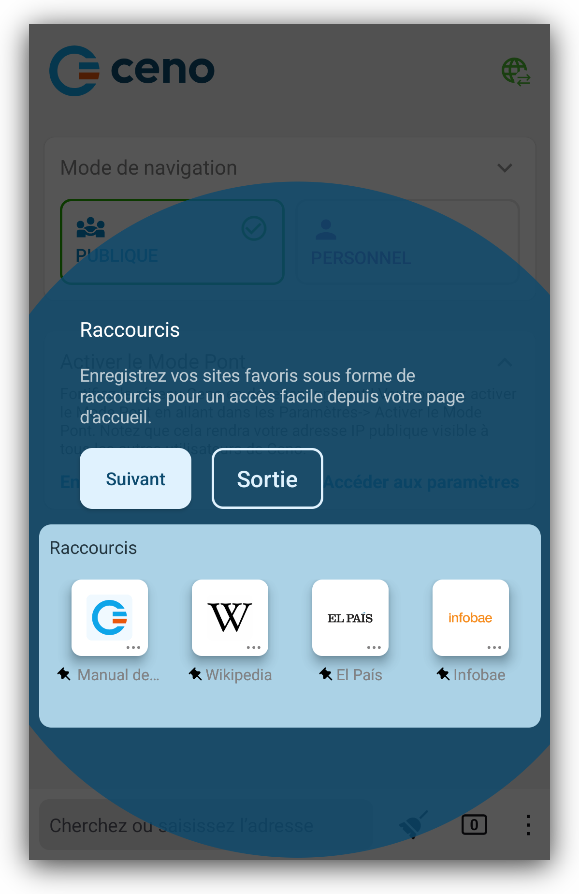
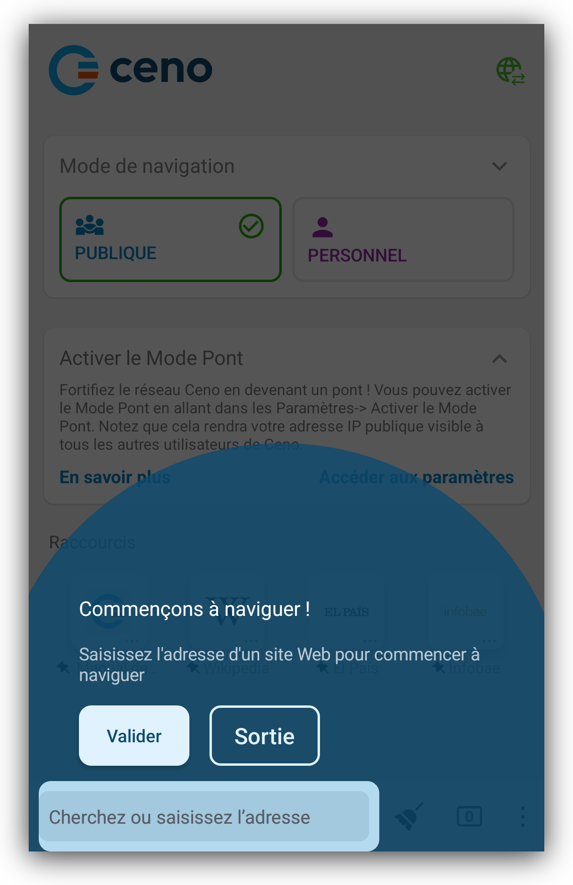
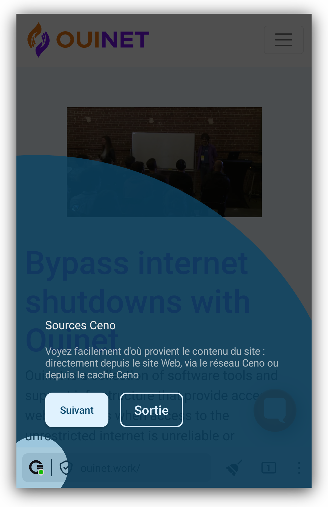
Permissions
A la fin de la visite, il vous sera demandé de donner à Ceno les permissions dont il a besoin pour un fonctionnement optimal :
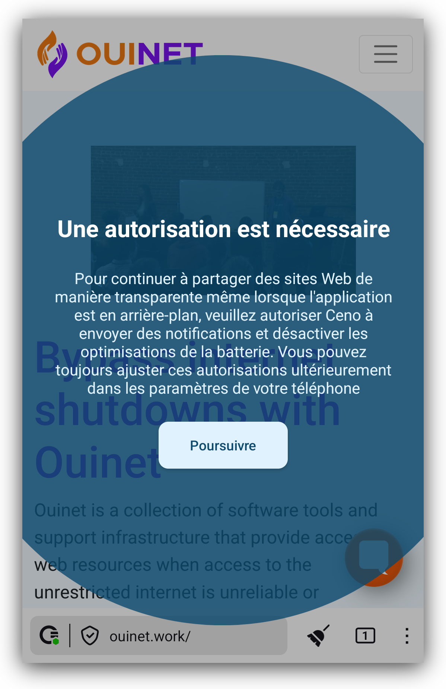
Lorsque vous appuyez sur Continuer, selon la version d'Android que vous avez sur votre téléphone, vous devrez donner des permissions Ceno pour vous envoyer des notifications et pour désactiver l'optimisation de la batterie. Certaines versions Android nécessitent les deux, et certains juste la permission de désactiver l'optimisation de la batterie.
Notifications
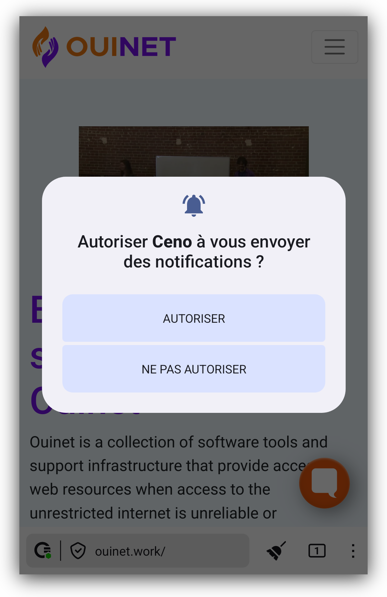
Lorsque vous permettez à Ceno de vous envoyer des notifications, l'application affichera l'icône Ceno dans votre barre de notification.

L'icône apparaîtra lorsque vous accédez au premier site.
Cette icône représente le service Navigateur Ceno , qui est la partie de Ceno
qui fonctionne en permanence (même lorsque vous ne naviguez pas) et permet aux
autres utilisateurs de ceno de récupérer du contenu à tout moment. Étant donné
que l'exécution de ce service utilise des ressources réseau et processeur, vous
pouvez vouloir l'arrêter quand vous êtes en mouvement (c.-à-d. non connecté à
Wi-Fi ou loin d'un chargeur).
En appuyant sur le bouton Stop vous arrêterez immédiatement à la fois Ceno et
son service (jusqu'à ce que vous ouvriez à nouveau Ceno).

Le bouton Faire disparaitre ouvrira une autre petite notification
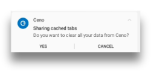
Appuyer sur Oui supprimera non seulement les données mises en cache dans l'application Ceno sur votre appareil, mais aussi tous les paramètres de personnalisation, tels que la position de barre d'adresse par défaut, ou le thème, ou vos favoris et autres paramètres que vous pourriez avoir choisis. Si vous appuyez sur Oui, Ceno sera arrêté et toutes ses données supprimées sans autres questions, laissant effectivement votre appareil comme si Ceno n'avait jamais été utilisé.
Attention : Android peut toujours garder d'autres traces d'avoir utilisé une application en plus de ses données, par exemple dans son journal système
Arrêtez l'optimisation de l'utilisation de la batterie
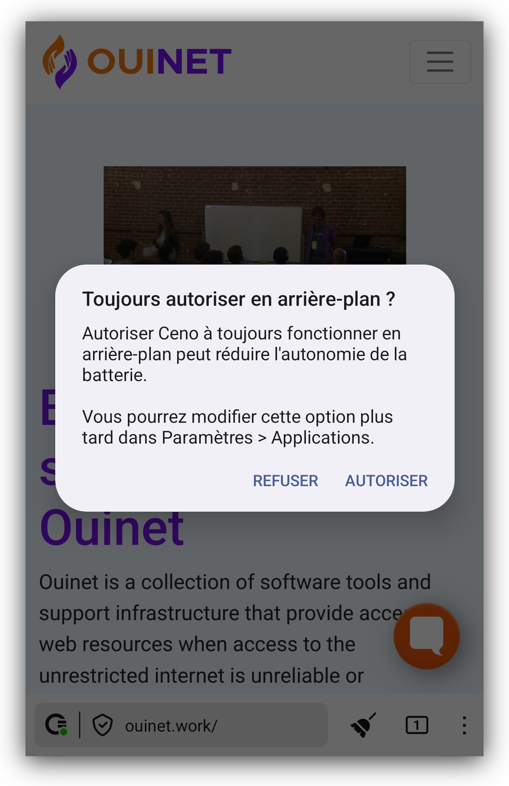
Cette option est généralement présente dans les applications qui doivent fonctionner en arrière-plan même si elles ne sont pas utilisées activement, ce qui est le cas avec l'application Ceno. Dans des conditions normales, votre téléphone Android tentera d'optimiser l'utilisation de la batterie de diverses applications qui peuvent fonctionner sur votre appareil. Le système d'exploitation de votre téléphone fait cela pour prolonger la durée de vie de la batterie entre les deux sessions de charge. Pour ce faire, il arrête parfois les applications qui fonctionnent et utilisent la batterie, mais ne sont pas utilisées activement par l'utilisateur. Lorsque vous permettez à Ceno de cesser d'optimiser l'utilisation de la batterie, le système d'exploitation de votre téléphone sera moins susceptible d'arrêter votre navigateur Ceno lorsque vous ne l'utilisez pas activement. Permettre à votre application Ceno de fonctionner même si elle n'est pas utilisée activement aide tout le réseau Ceno pair à pair à fonctionner mieux et à répondre à plus de demandes d'utilisateurs. Lorsque vous autorisez cette option, vous aidez tous les utilisateurs dans le réseau Ceno.
Public ou personnel ?
Après l'affichage et les écrans d'autorisations , l'application affiche son écran principal. Dès que l'écran apparaît, vous remarquerez deux boutons importants appelés Public et Personnel. Ils vous permettent de choisir entre le mode de navigation Public et Personnel.
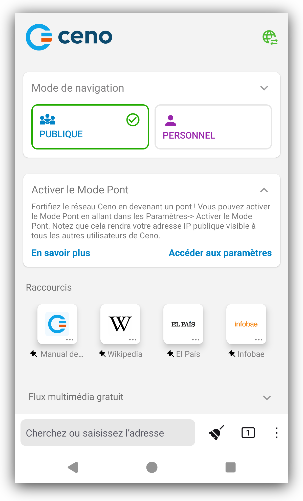
Navigation publique
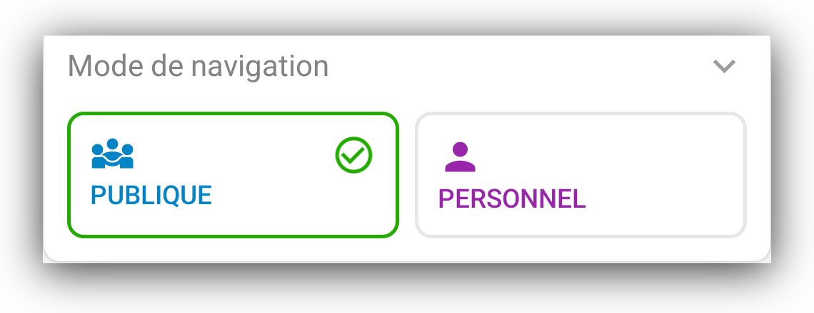
Ci-dessous l'image illustre la façon dont Ceno récupère le contenu du site en mode de navigation publique.

Les lignes en pointillés sur cette image représentent les demandes et les réponses du contenu du site, et les astérisques représentent du contenu crypté.
Dans le ** Mode de navigation public**, les demandes des utilisateurs sont
traitées par le réseau public Ceno. Dans ce mode, les utilisateurs demandent
un contenu de site Web de la même manière qu'ils le font lorsqu'ils utilisent un
autre navigateur. Si Ceno est en mesure d'accéder directement au site d'origine,
il récupérera son contenu et le livrera à l'utilisateur - c'est le même
processus que la plupart des autres navigateurs.
Cependant, si Ceno n'est pas en mesure d'atteindre le site Web souhaité, alors
il tentera de l'atteindre via des injecteurs.
Injecteurs
Les injecteurs sont des serveurs sécurisés chargés d'injecter le contenu communément accessible dans le réseau Ceno, et de vérifier son authenticité et de le signer. Les injecteurs sont placés dans des emplacements stratégiques, de sorte qu'ils restent accessibles par les utilisateurs dans des zones restreintes et peuvent également atteindre les sites d'origine. Ils aident à récupérer le contenu souhaité soit depuis le site d'origine ou depuis le réseau Ceno et à le retourner à l'utilisateur qui l'a demandé. Ils sont gérés par eQualitie.
En tant qu'utilisateur, vous n'avez pas besoin de faire quoi que ce soit pour vous connecter à un Injecteur - l'application le fait automatiquement lorsque vous demandez un site Web auquel il ne peut pas accéder directement.
Passerelles
Les passerelles sont des appareils appartenant à des utilisateurs individuels de Ceno basés dans des endroits qui bénéficient d'une connectivité relativement sans restriction et d'une connexion Internet. Ils sont accessibles par les utilisateurs de Ceno qui ne peuvent pas accéder directement aux sites Web. Ces appareils sont responsables de l'envoi de demandes d'utilisateur chiffrées aux Injecteurs et des réponses chiffrées aux utilisateurs.
Les passerelles ne sont pas en mesure de lire les demandes et les réponses qu'ils transmettent.
Chaque utilisateur Ceno peut configurer son appareil pour devenir une passerelle.
La jonction Activer le mode passerelle peut être atteinte soit du lien sur la page d'accueil, soit du menu vertical à trois points, à droite de la barre d'adresse.
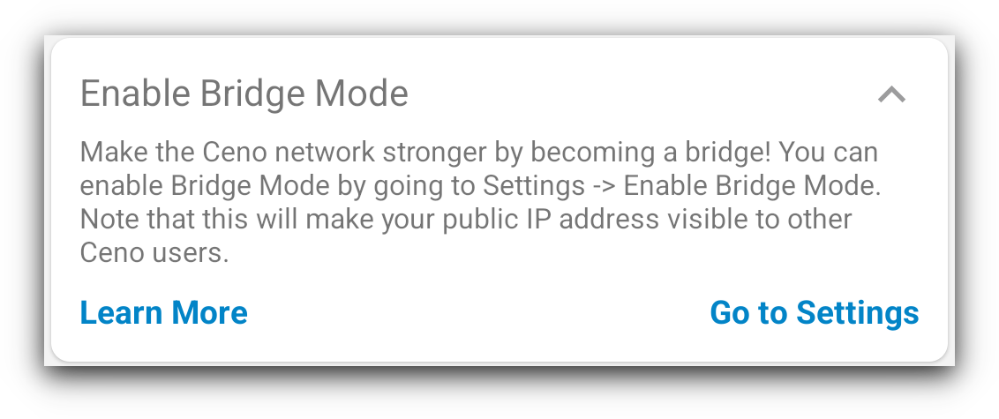
Dans la page Paramètres, déplacer le réglage** Activer le mode passerelle** pour passer à la position ON
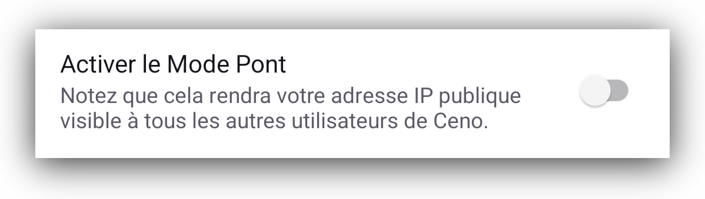

fera de votre appareil une passerelle pour d'autres utilisateurs Ceno dont l'accès à Internet est plus restreint. Cela nécessite un redémarrage des services Ceno
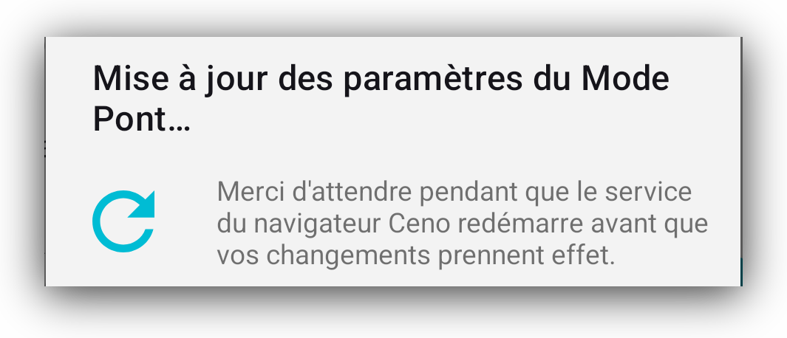
Une fois le mode passerelle est établi avec succès, vous recevrez un message de confirmation.
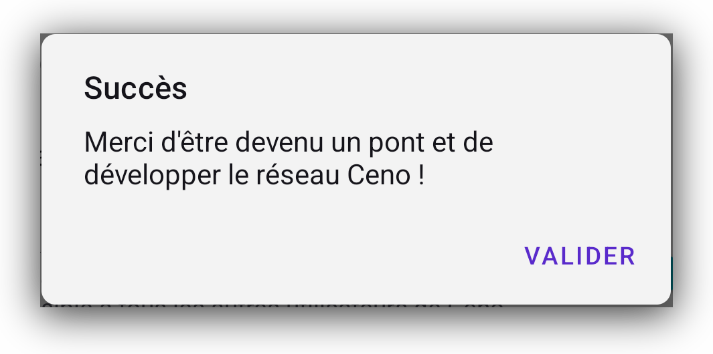
A partir de ce moment, l'application Ceno sur votre appareil peut agir comme une passerelle pour aider les utilisateurs de Ceno dans les zones restreintes à atteindre le contenu souhaité.
Cependant, la mise en place de la passerelle nécessite également des paramètres spécifiques de votre routeur ou réseau, qui sont décrits dans la section [Configuration de la passerelle] (./bridge-configuration.html).
Cache Ceno
Et enfin, le ** cache Ceno**. Tous les utilisateurs de Ceno sont membres de ce réseau pairs-à-pairs, et ils stockent le contenu de site Web récupérés via le réseau public Ceno et le partagent entre eux.
Dans le** Mode de navigation public**, Ceno récupère le contenu demandé en utilisant l'un de ces canaux de communication. Il filtre toutes les données privées (comme les mots de passe et les cookies) du trafic Web afin de s'assurer qu'il ne les transmets pas à d'autres utilisateurs.
Navigation publique - quand l'utiliser
Cette option est conçue pour vous, l’utilisateur, pour accéder à la plupart des choses qui ne vous obligent pas à vous connecter ou à saisir de donnée personnelle. Vous pouvez l'utiliser pour naviguer, écouter des podcasts, regarder les actualités, lire des blogs ou des articles, suivre les sports, la science, la musique, les événements ou tout autre contenu. Dans le mode de navigation Public, Ceno peut essayer d'accéder au contenu demandé ** directement à partir des sites Web**, à partir du Réseau public Ceno (injecteurs et passerelles) ou d'autres utilisateurs Ceno (cache Ceno).
_Veuillez noter que certains contenus qui ne sont pas considérés comme sûrs pour le partage ne seront jamais injectés, peu importe le nombre de personnes qui le récupèrent en utilisant la navigation publique. Cela inclut le contenu marqué comme privé par le serveur d'origine, le contenu qui nécessite une authentification, et certains trafics échangés par certaines applications Web dynamiques. _
Sources de sites Web en mode de navigation publique
Lorsque vous souhaitez accéder à un site Web en utilisant le mode de navigation Ceno Public, l'application peut essayer de récupérer le contenu directement ou via le réseau public Ceno. Dans le chapitre suivant, nous décrivons ce processus plus en détail.
Contenu récupéré directement depuis le site web
Ceno va récupérer le contenu souhaité directement à partir du serveur d'origine lorsque celui-ci est accessible. C'est de la même façon que vous accédez à n'importe quel site Web à travers la plupart des autres navigateurs populaires.

Lorsque vous accédez à des sites Web de cette façon, ils ne sont pas stockés dans votre cache et vous ne pouvez pas les partager avec d'autres membres du réseau Ceno. Lorsque Ceno récupère le contenu du serveur d'origine, le petit bouton Ceno sur votre barre d'adresse aura un point vert.
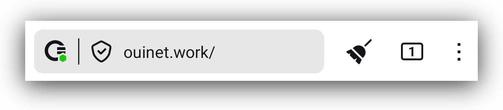
Si vous appuyez sur ce bouton, vous verrez combien de composants du site demandé ont été récupérés à partir du site Web, réseau Ceno ou cache Ceno.
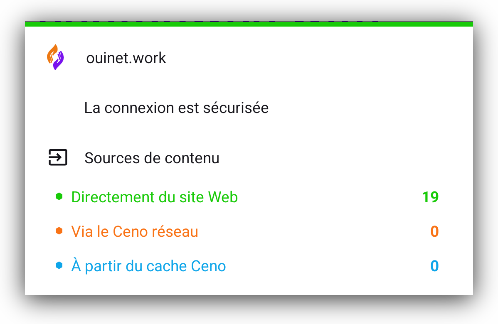
Si vous allez dans Paramètres > Données vous pouvez vérifier qu'aucune donnée n'est stockée dans votre cache après avoir accédé à un site directement depuis son serveur.

Dans ce cas, les risques pour vous en tant qu'utilisateur sont similaires aux risques associés à l'utilisation de tout autre navigateur. En savoir plus.
Contenu récupéré via le réseau public Ceno
Lorsque Ceno n'est pas en mesure d'atteindre le serveur d'origine, il tentera d'y accéder via le réseau public Ceno.
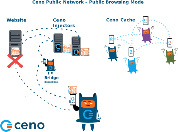
Ce réseau contient des serveurs sécurisés appelés Injecteurs, qui ont un accès direct aux sites d'origine, et qui injectent le contenu de ces sites dans le réseau Ceno. Lorsque le contenu du site est récupéré via le réseau public Ceno, cela sera indiqué par un point orange sur le petit bouton Ceno sur votre barre d'adresse.
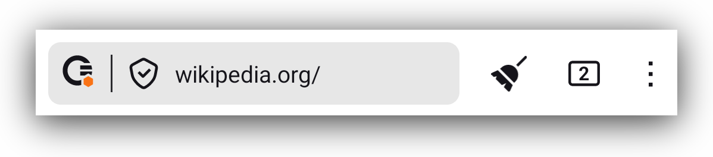
En cliquant sur ce bouton, vous ouvrirez une petite fenêtre qui vous informera combien de composants du site ont été récupérés à partir du réseau public Ceno.
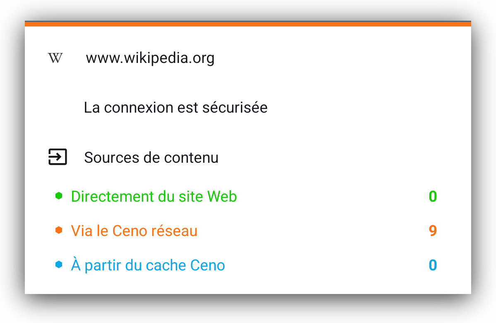
Tout site auquel vous accédez de cette façon sera stocké dans le cache local de votre navigateur Ceno, et sera mis à la disposition d'autres membres du réseau Ceno.
Vous pouvez voir quels sites sont stockés dans votre cache en allant dans Paramètres > Données.
Il y a trois entrées dans cette section : Contenu local, Contenu que vous
partagez, et nettoyer le contenu mis en cache.
La section cache local vous montre combien de données ont été stockées dans
le cache Ceno sur votre appareil.
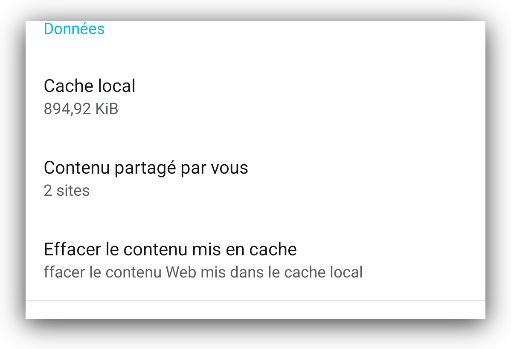
Si vous appuyez sur Contenu que vous partagez, vous pourrez voir les sites Web que votre appareil peut mettre à la disposition du réseau Ceno.

Appuyer sur Nettoyer le contenu mis en cache vous permettra de supprimer toutes les données mises en cache.
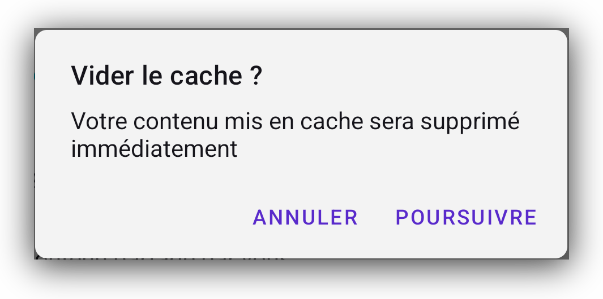
Contenu mis en cache
Cette façon d’accéder aux sites Web est utile lorsque d’autres composants du
réseau public Ceno ne sont pas accessibles, ou lorsque vous décidez d’accéder à
un site Web à partir des appareils de vos pairs pour d’autres raisons.
L'image ci-dessous illustre les demandes et les réponses échangées entre les
membres du réseau Ceno qui ont préalablement accédé et mis en cache les sites
souhaités.
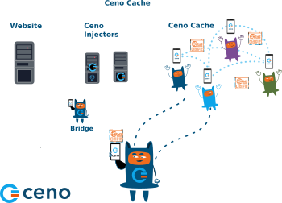
Si un contenu de site Web est récupéré via le cache Ceno, le bouton Ceno aura un petit point bleu pour indiquer cela.
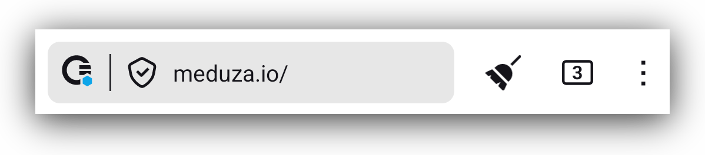
Cliquer sur le bouton Ceno pour ouvrir l'écran d'information qui indique le même.
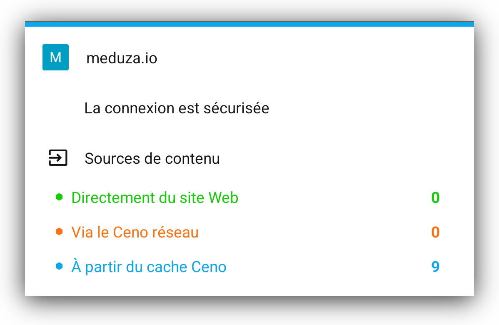
Dans ce cas, le contenu du site Web sera mis en cache sur votre appareil et sera partagé avec d'autres utilisateurs de Ceno lorsqu'il sera demandé. Vous pouvez vérifier cela en allant dans Réglages >Données > Contenu que vous partagez.
Il peut également arriver que le navigateur ceno ouvre un site qui a été stocké dans votre propre cache lorsque vous l'avez accédé avant. Lorsque cela se produit, Ceno vous informera en présentant les sources du site en couleur grise.

Dans les paramètres de Ceno > Outils de développement > Sources du site Web vous pouvez vérifier ou décocher ces quatre paramètres.
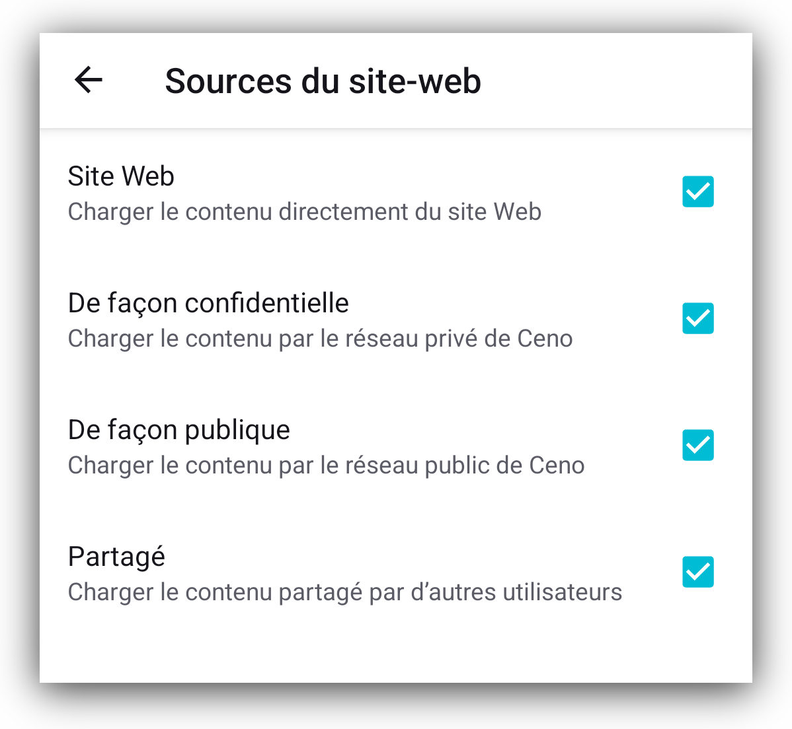
S'ils sont tous cochés, selon le mode de navigation, Ceno tente d'obtenir le site via tous les mécanismes applicables, en même temps. On appelle ça une "requête mixte". Quel que soit le mécanisme qui répond le premier celui-ci qui est utilisé et le reste des demandes sont annulées.
Pour de meilleurs résultats, nous recommandons que ces 4 de paramètres restent activés en tout temps.
Navigation personnelle - quand l'utiliser
Vous pouvez sélectionner la navigation personnelle en cliquant sur le bouton Personnel sur l'écran principal.
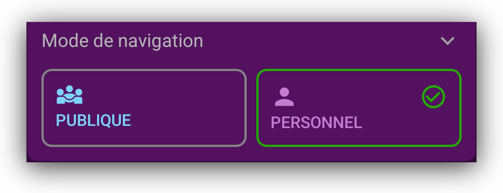
Lorsque vous sélectionnez cette option, même si les quatre paramètres Sources Web sont vérifiés, votre application Ceno tentera d'accéder aux sites Web souhaités seulement directement ou via réseau privé Céno.
Ce mode de navigation peut être utilisé pour les sites Web où vous devez vous connecter et entrer d'autres données personnelles. Exemples : sites commerciaux, courriels, sites de médias sociaux ou autres sites Web que vous ne souhaitez pas partager avec le reste du réseau Ceno.
Accès aux sites Web via le réseau privé ceno
L'image suivante montre le flux de requêtes au site Web et les réponses entre les éléments du** réseau privé Ceno**.
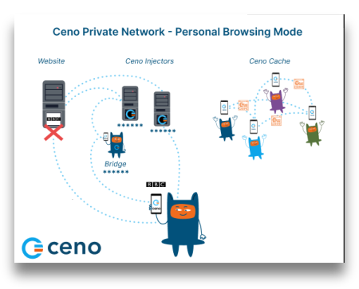
Dans le** Mode de navigation personnel**, lorsqu'un site est demandé, Ceno le récupérera directement à partir des serveurs d'origine, ou via les Injecteurs Ceno . Cependant, en mode personnel, les Injecteurs ne cachent pas le contenu comme ils le font en mode de navigation publique. Ils transmettent simplement la demande au serveur d'origine et transmettent la réponse à l'utilisateur, mais ne peuvent pas voir le contenu crypté. En savoir plus sur Mode de navigation personnelle.
Parfois, si un site Web est inaccessible en mode de navigation publique, en raison de différences dans la façon dont ces deux modes fonctionnent, nous suggérons de tenter de l'atteindre via le mode de navigation personnelle.
Pour que ce mécanisme fonctionne, il est nécessaire que les sources du site Web Privé et Site Web restent cochées.
Pourquoi devenir une passerelle Ceno ?
Un réseau pair à pair est construit à partir de chacun des nœuds qui y sont connectés (oui, ça veut dire vous aussi !). Plus il y a de nœuds, plus robuste et versatile le réseau sera.
Si vous lancez le navigateur Ceno depuis un pays qui ne censure pas Internet (ou pas aussi lourdement que certains), envisagez d'aider d'autres utilisateurs de Ceno en devenant une passerelle. Vous commencerez alors à gérer le trafic entre les clients vivant dans des pays fortement censurés et les injecteurs de Ceno.
Vous ne serez pas en mesure de voir leur trafic (il sera envoyé à travers un tunnel crypté), pas plus que des traces de ce trafic ne resteront sur votre appareil.
Note : La configuration décrite dans cette section peut également aider votre appareil à partager efficacement le contenu vers d'autres sur le cache distribué, alors veuillez envisager de l'appliquer aussi bien lors de l'utilisation de Ceno dans un pays pratiquant la censure (mais garder à l'esprit les [risks] (https://ceno.app/en/faq.html#bridgemode) de donner accès à ce contenu à d'autres)
Comment devenir une passerelle de Ceno ?
Comme indiqué dans [this section] (./public-or-personal.html#bridges), l'application Ceno fournit certaines fonctionnalités qui vous permettent de devenir facilement une passerelle Ceno, si votre configuration réseau le permet.
Si vous avez vérifié votre Reachability et votre statut UPnP status et il ressemble à ceci

Vous devrez configurer votre routeur en permettant UPnP ou en configurant la redirection de port. Dans les sections suivantes, nous décrivons les étapes à suivre.
Activer l’UPnP sur votre routeur Wi-Fi
UPnP est la meilleure façon de rendre votre navigateur Ceno (ou client de bureau) accessible au réseau Ceno.
Note : L'activation de UPnP sur le routeur Wi-Fi peut exposer des dispositifs sur votre réseau à des interférences externes. Veuillez prendre connaissance des risques (https://www.howtogeek.com/122487/htg-explains-is-upnp-a-security-risk/) et envisager d'utiliser d'autres méthodes comme expliqué ci-dessous
La première chose à faire est de vous connecter à l'interface web de votre routeur. Pour savoir comment faire, veuillez consulter le manuel de votre routeur qui vous indiquera quel utilisateur et mot de passe utiliser pour vous connecter.
Après cela, les étapes à effectuer sont similaires, mais peuvent ne pas être identiques pour tous les modèles de routeur.
Voici un bel article avec des instructions étape par étape pour activer UPnP sur différents routeurs.
Veuillez trouver les instructions pour votre type de routeur et effectuer les étapes nécessaires.
Si vous préférez, cependant, vous pouvez choisir de configurer la redirection de port au lieu de l'UPnP.
Utilisez la redirection de port comme alternative à UPnP
La première étape est la même qu'avant : connectez-vous à l'interface web du routeur.
Ensuite, veuillez localiser l'option redirection de port.
Pour voir vers quelle adresse IP vous devez transférer les connexions et le port pertinent, ouvrez la page ** Paramètres Ceno** et regardez sous les paramètres UDP locaux.
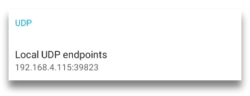
La redirection de port doit concerner le protocole UDP (pas TCP).
Ceno choisit un port aléatoire en première exécution et le conserve pour les exécutions ultérieures, mais l'adresse IP réseau local de votre appareil peut changer de temps à autre. Vous devriez donc revoir périodiquement la page Paramètres Ceno pour voir que votre appareil est accessible au réseau Ceno.
Votre appareil est accessible si son
Le statut d'accessibilité est ** probablement accessible** ou accessible
** Le status UPnP** est activé
** Note technique** : Sinon, vous pouvez vous assurer que le routeur attribue toujours la même adresse IP à votre appareil (p. ex. via un bail DHCP statique pour l'adresse MAC du périphérique)
Si vous avez un ordinateur avec une bonne connexion qui reste la plupart du temps allumé, et vous souhaitez le configurer comme une passerelle Ceno, veuillez continuer à lire.
Faire tourner un pont sur un ordinateur
Si votre ordinateur supporte les conteneurs Docker, vous pouvez lancer un client
Ceno préconfiguré sur celui-ci pour agir comme une passerelle. Si Docker n'est
pas encore installé, veuillez suivre les instructions pour installer le moteur
Docker dans votre plateforme. Pour les dérivés Debian comme Ubuntu ou Linux
Mint, vous pouvez simplement lancer : sudo apt install docker.io
Pour déployer un conteneur client Ceno, il vous suffit d’exécuter la commande suivante dans un terminal (n’ayez pas peur, il vous suffit de la copier et de la coller telle quelle sur la ligne de commande) :
sudo docker run --name ceno-client \
-dv Ceno:/var/opt/ouinet --network host \
--restart unless-stopped equalitie/Ceno-client
Si le système d’exploitation de votre ordinateur n’est pas fondé sur GNU/Linux, la commande doit être légèrement différente :
sudo docker run --name ceno-client \
-dv ceno:/var/opt/ouinet \
-p 127.0.0.1:8077-8078:8077-8078 -p 28729:28729/udp \
--restart unless-stopped equalitie/ceno-client
La commande va démarrer un conteneur nommé ceno-client qui fonctionnera sur chaque démarrage, à moins que vous lui disiez explicitement d'arrêter.
Veuillez consulter la Ceno Docker documentation client pour plus d'informations sur la façon de manipuler le conteneur.
Fonctionnalités
Barre d'outils
Au bas de l'écran, vous verrez la barre contenant divers boutons. Certains d'entre eux n'ont probablement pas besoin d'explication, mais d'autres si. Jetons un coup d’œil à chacun d’eux :
Bouton d'accueil
Le premier est le bouton Accueil familier.

Vous pouvez configurer ce bouton pour être montré ou caché, mais en allant dans Paramètres > Personnalisations > Afficher le bouton d’accueil

Bouton Ceno
Ensuit le bouton Ceno. Appuyer dessus ouvrira un écran d'information qui montre d'où les composants du site ont été récupérés. Nous décrivons cet écran plus en détail dans les sections de navigation personnelle et publique.
Bouton de connexion sécurisé
Lorsque vous entrez l'adresse du site Web que vous souhaitez accéder, vous
verrez le bouton de connexion Sécurisé, représenté par un petit cadenas ou
un petit bouclier, qui indique que votre connexion à un site particulier est
sécurisée.
Si le cadenas ou le bouclier est traversé avec une ligne, cela signifie que la
connexion à ce site particulier n'est pas sécurisée. C'est la même chose que
dans d'autres navigateurs.

Note : même si la connexion à ce site n'est pas sécurisée, l'icône Ceno a un petit point vert. Ce point n'indique pas que la connexion est sécurisée, mais que les données ont été récupérées directement depuis le site d'origine.
Si vous appuyez dessus, vous verrez les détails de cette connexion. À titre d'illustration, nous incluons des images de connexion sécurisée ou non sécurisée.


Bouton nettoyer
Le premier bouton sur le côté droit de la barre d'adresse est le bouton Nettoyer, en forme de petit balai.
Appuyer dessus donne à l'utilisateur le choix pour effacer toutes les données Ceno, comme si Ceno n'était jamais utilisé, ou pour effacer seulement ce que Ceno stockait dans le cache. La première option nettoie toutes les préférences, signets, réglages et personnalisations, tandis que la seconde ne nettoie que les sites que l'application Ceno stocke dans le cache de votre appareil.

Si vous allez dans Paramètres > Personnalisations > bouton nettoyage vous pouvez choisir si vous voulez que le bouton nettoyer soit affiché dans la barre d'outils ou dans le menu.

Cliquer sur l'option comportement par défaut ouvrira une boîte de dialogue qui vous offre de choisir le comportement du Bouton nettoyage lorsque vous appuyez dessus. Il peut vous offrir un prompt, comme sur la capture d'écran ci-dessus, ou il peut immédiatement supprimer tout contenu cache ou même toutes les données Ceno.

Bouton des onglets
le bouton suivant est un petit rectangle avec un numéro dedans. Ce numéro indique le nombre d'onglets que l'utilisateur a ouverts.
Appuyer dessus ouvrira un écran où vous pouvez voir tous les onglets que vous avez ouverts.

Vous pouvez les fermer un par un, si vous appuyez sur le menu vertical dans le coin inférieur droit, vous obtiendrez l'option de les fermer tous ensemble.

Lorsque vous regardez l'écran de l'onglet, en haut de cet écran, vous verrez les icônes pour la navigation publique ou personnelle, et vous pouvez facilement passer de l'un à l'autre.
Vue lorsque l'icône de navigation publique est sélectionnée

Vue lorsque la navigation personnelle est sélectionnée.

Menu vertical
L'effet du menu vertical de trois points sur le côté droit de l'affichage de la barre d'outils dépend du contexte.
- Lors de l'ouverture d'une page web ouverte, ce menu affichera les options pertinentes à cette page.

La plupart des éléments de ce menu sont explicatifs. Mais si vous ne connaissez pas uBlock Origin, il s'agit d'un bloqueur d’annonces et de tracker.
La raison pour laquelle nous l’intégrons à notre navigateur Ceno est principalement pour empêcher la mise en cache inutile des publicités et éviter la mise en cache éventuelle des identifiants uniques associés à des trackers.
Pour en savoir plus sur ce bloqueur d'annonce et de tracker, veuillez visiter leur page web.
- Si vous appuyez sur ce menu depuis la page d'accueil de Ceno, vous pourrez voir l'élément qui vous permet de nettoyer Ceno (son action est la même que le petit balai sur l'écran d'accueil).

- Lorsque vous êtes sur l'écran des onglets, appuyer sur ce menu vous donnera seulement l'option de fermer tous les onglets
Paramètres
Les paramètres sont atteints via le menu des trois points verticaux puis par la sélection de l'option Paramètres.

Ils sont divisés en 5 groupes :
[Général] (./settings.md#settings-general)
[Permissions] (./settings.html#settings-permissions)
[Données] (./settings.md#settings-data)
[Outils Développeurs] (./settings.html#settings-developer-tools)
[À propos] (./settings.md#settings-about)
Regardons chacun de ceux-ci.
Paramètres : Général

Vous êtes probablement familier avec la plupart de ces paramètres car ils sont similaires aux options disponibles dans d'autres navigateurs. Dans les sections suivantes, nous allons décrire brièvement les principaux réglages.
Définir le moteur de recherche par défaut

Ce paramètre vous permet de définir le moteur de recherche par défaut pour le navigateur Ceno , en activant ou en désactivant les options fournies.
Personnalisation

Encore une fois, ces options sont essentiellement auto-descriptives.
Nous attirons votre attention sur une option qui pourrait ne pas exister dans d'autres applications. Ceno vous permet de changer son icône de lancement ce qui peut être utile dans certaines circonstances. Nous vous offrons plusieurs options parmi lesquelles choisir.
Activez le mode pontpasserelle
Le but et la fonctionnalité de haut niveau du mode passerelle sont décrits dans la section Section mode passerelle. Ici vous pouvez activer ou désactiver ce réglage.
Mesures d'arrière-plan

Ce sont des métriques qui nous aident à comprendre tout problème qui pourrait se produire de temps en temps pendant que vous utilisez le navigateur Ceno. Appuyer sur les métriques d'arrière plan ouvrira l'écran vous donnant des options pour désactiver les métriques.

Nous recommandons que ces paramètres soient maintenus en position On, car ils nous aident à comprendre les problèmes que certains utilisateurs peuvent rencontrer en utilisant Ceno. Plus nous sommes capables de comprendre les problèmes, plus nous sommes capables de les résoudre.
Nous ne recueillons aucune donnée personnelle et nous ne vendons aucune donnée à des tiers. Pour lire notre politique de confidentialité, cliquez sur le bouton Politique de confidentialité.
Rapport d'incident
Les circonstances, les conditions de réseau et les dispositifs dans lesquels Ceno est utilisé sont différents pour différents utilisateurs, ce qui peut parfois causer le crash de l'application Ceno. Pour comprendre ce qui a causé un accident dans une situation particulière, Ceno a été conçu pour générer des rapports d'accident et les envoyer à l'équipe de développement. Vous, en tant qu'utilisateur, pouvez activer ou désactiver l'envoi du rapport de récupération de crash.
Ces rapports ne contiennent aucune donnée personnellement identifiable. Si vous subissez des incidents de Ceno, nous vous recommandons d'activer ce réglage
Suppression des données de navigation

Appuyer sur cette option vous permet de sélectionner les données Ceno que vous souhaitez supprimer.

Le bouton Effacer sur l'écran d'accueil supprime toutes les données Ceno, mais ici vous pouvez choisir quoi supprimer et quoi garder.
Changer de langue

Cette application a été traduite en plusieurs langues. S’il y a une langue que vous souhaitez voir ajoutée à cette liste déjà exhaustive, veuillez nous le faire savoir. Vous pouvez nous contacter par email à support [at] ceno [dot] app ou via notre dépot gitlab .
Paramètres : Permissions

Ceno n'a besoin que de deux permissions : envoyer les notifications utilisateur et arrêter l'optimisation de la batterie. On vous a probablement demandé de donner ces permissions à Ceno quand vous avez commencé l'application Ceno, ou après un redémarrage après le nettoyage de toutes les données Ceno.
Vous pouvez en savoir plus sur eux dans la section [Permissions] (./first-time-run.md#permissions).
Paramètres : Données
Dans cette section, vous pouvez voir quel contenu votre application Ceno peut partager avec d'autres utilisateurs de Ceno lorsqu'ils le demandent.
Contenu que vous partagez liste les sites Web que votre navigateur Ceno est en mesure de partager avec d'autres utilisateurs de Ceno.
Le cache local vous informe combien de données peuvent être téléchargées depuis votre appareil sur le réseau Ceno lorsque d'autres utilisateurs les demandent.
L'option Nettoyer le contenu mis en cache supprimera les données de votre cache et il ne restera rien à partager avec vos pairs. Pour mettre en cache des sites Web et être en mesure de les partager avec vos pairs à nouveau, vous devrez y accéder via le réseau Ceno Public à nouveau.
Plus d'informations sur le but de ces réglages sont disponibles dans la section Public ou Personnel.
Paramètres : Outils de développeur

Sources de sites Web
Ceno est en mesure de récupérer le contenu du site que vous demandez à partir de
différentes sources : directement depuis le site d'origine, le réseau public
Ceno, le réseau privé Ceno et le cache Ceno. Plus de détails sur ces options
sont disponibles dans les sections détaillant les modes de navigation Public et
Personnel.
Par défaut, toutes ces options sont cochées et pour de meilleurs résultats, vous
pouvez simplement les laisser comme elles sont.
Vous pouvez lire des informations plus détaillées sur ces options dans la section [Public ou Personnel] (./public-or-personal.html).
Protection contre le suivi
Ces deux paramètres empêchent que vos activités en ligne soient suivies par des tiers.
Détails du réseau
Cette section contient des détails sur les paramètres de votre réseau, qui peuvent être utiles à notre équipe de développement si nous avons besoin d'enquêter sur les problèmes que vous nous signalez.
Activer le fichier journal
Activer et exporter le fichier journal Ceno peut être utile lors de l'enquête sur les problèmes. Ces fichiers ne contiennent pas de données personnelles identifiables. Si vous les exportez vers le système de fichiers sur votre appareil, vous pouvez voir leur contenu. Vous pouvez également les partager avec notre équipe de développement lorsque vous éprouvez des problèmes qui peuvent nécessiter une enquête de nos experts techniques.
Paramètres : À propos

Contient des informations supplémentaires sur votre installation de Ceno, y compris son numéro de version, l'état du service en arrière plan Ceno et le numéro de version de la bibliothèque Ouinet qui est intégrée dans Ceno.